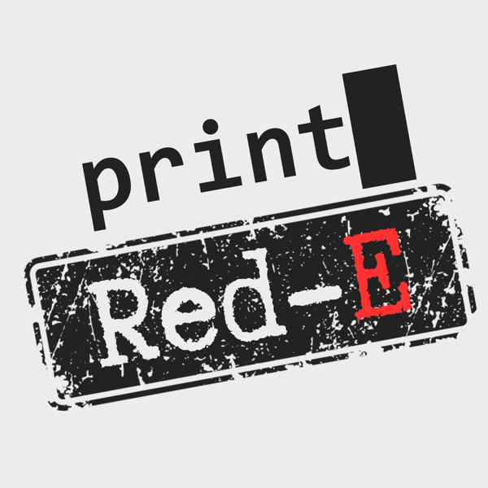

Get a batch of photos ready to print: set to 300 DPI, with the print sizes each one can handle.
Your photos stay on this device. Nothing is uploaded.
Assumes one photo fills the whole item. In a collage each photo is smaller, so check it against a smaller size.
What does 300 DPI actually change?
Only a label inside the file. Your pixels, sharpness and quality stay exactly the same; the photo is not re-saved or recompressed. Some print shops and publishers check the label, so it's worth having right.
What decides print quality is the number of pixels. A lab spreads your photo's pixels across the paper you order, so a 4000-pixel photo labelled 72 DPI prints exactly as well as the same photo labelled 300. That's why the print sizes for each photo come from its pixels, not its DPI. Shutterfly, for one, judges resolution from pixels against the print size you pick.
Ratings assume the lab crops the photo to fill the item, which is the usual default. Cropping a photo yourself uses fewer of its pixels, so it lowers what it can print.
Blankets, pillows, tote bags and canvas need fewer pixels than paper (200 per inch for sharp instead of 300): the weave or canvas texture softens fine detail, and they're usually seen from further away. These are rules of thumb; Shutterfly's own low-resolution warning has the final say.